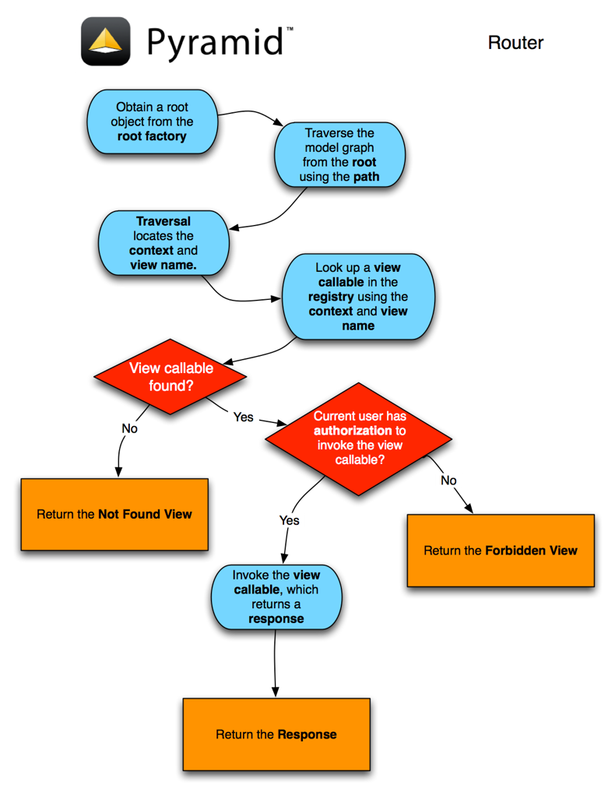

Request Processing
Once a Pyramid application is up and running, it is ready to accept
requests and return responses. What happens from the time a WSGI
request enters a Pyramid application through to the point that
Pyramid hands off a response back to WSGI for upstream processing?
- A user initiates a request from his browser to the hostname and port
number of the WSGI server used by the Pyramid application.
- The WSGI server used by the Pyramid application passes the WSGI
environment to the __call__ method of the Pyramid
router object.
- A request object is created based on the WSGI environment.
- The application registry and the request object created in
the last step are pushed on to the thread local stack that
Pyramid uses to allow the functions named
get_current_request() and
get_current_registry() to work.
- A NewRequest event is sent to any
subscribers.
- If any route has been defined within application configuration,
the Pyramid router calls a URL dispatch "route
mapper." The job of the mapper is to examine the request to determine
whether any user-defined route matches the current WSGI
environment. The router passes the request as an argument to the
mapper.
- If any route matches, the route mapper adds attributes to the request:
matchdict and matched_route attributes are added to the request
object. The former contains a dictionary representing the matched dynamic
elements of the request's PATH_INFO value, the latter contains the
IRoute object representing the route which
matched. The root object associated with the route found is also
generated: if the route configuration which matched has an
associated factory argument, this factory is used to generate the
root object, otherwise a default root factory is used.
- If a route match was not found, and a root_factory argument was
passed to the Configurator constructor, that callable is used to
generate the root object. If the root_factory argument passed to the
Configurator constructor was None, a default root factory is used to
generate a root object.
- The Pyramid router calls a "traverser" function with the root
object and the request. The traverser function attempts to traverse the
root object (using any existing __getitem__ on the root object and
subobjects) to find a context. If the root object has no
__getitem__ method, the root itself is assumed to be the context. The
exact traversal algorithm is described in Traversal. The
traverser function returns a dictionary, which contains a context
and a view name as well as other ancillary information.
- The request is decorated with various names returned from the traverser
(such as context, view_name, and so forth), so they can be
accessed via e.g. request.context within view code.
- A ContextFound event is sent to any
subscribers.
- Pyramid looks up a view callable using the context, the
request, and the view name. If a view callable doesn't exist for this
combination of objects (based on the type of the context, the type of the
request, and the value of the view name, and any predicate
attributes applied to the view configuration), Pyramid raises a
HTTPNotFound exception, which is meant to
be caught by a surrounding exception view.
- If a view callable was found, Pyramid attempts to call it. If an
authorization policy is in use, and the view configuration is
protected by a permission, Pyramid determines whether the
view callable being asked for can be executed by the requesting user based
on credential information in the request and security information attached
to the context. If the view execution is allowed, Pyramid calls
the view callable to obtain a response. If view execution is forbidden,
Pyramid raises a HTTPForbidden
exception.
- If any exception is raised within a root factory, by
traversal, by a view callable or by Pyramid itself
(such as when it raises HTTPNotFound or
HTTPForbidden), the router catches the
exception, and attaches it to the request as the exception attribute.
It then attempts to find a exception view for the exception that
was caught. If it finds an exception view callable, that callable is
called, and is presumed to generate a response. If an exception
view that matches the exception cannot be found, the exception is
reraised.
- The following steps occur only when a response could be
successfully generated by a normal view callable or an
exception view callable. Pyramid will attempt to execute
any response callback functions attached via
add_response_callback(). A
NewResponse event is then sent to any
subscribers. The response object's __call__ method is then used to
generate a WSGI response. The response is sent back to the upstream WSGI
server.
- Pyramid will attempt to execute any finished
callback functions attached via
add_finished_callback().
- The thread local stack is popped.

This is a very high-level overview that leaves out various details. For more
detail about subsystems invoked by the Pyramid router such as
traversal, URL dispatch, views, and event processing, see
URL Dispatch, Views, and Using Events.